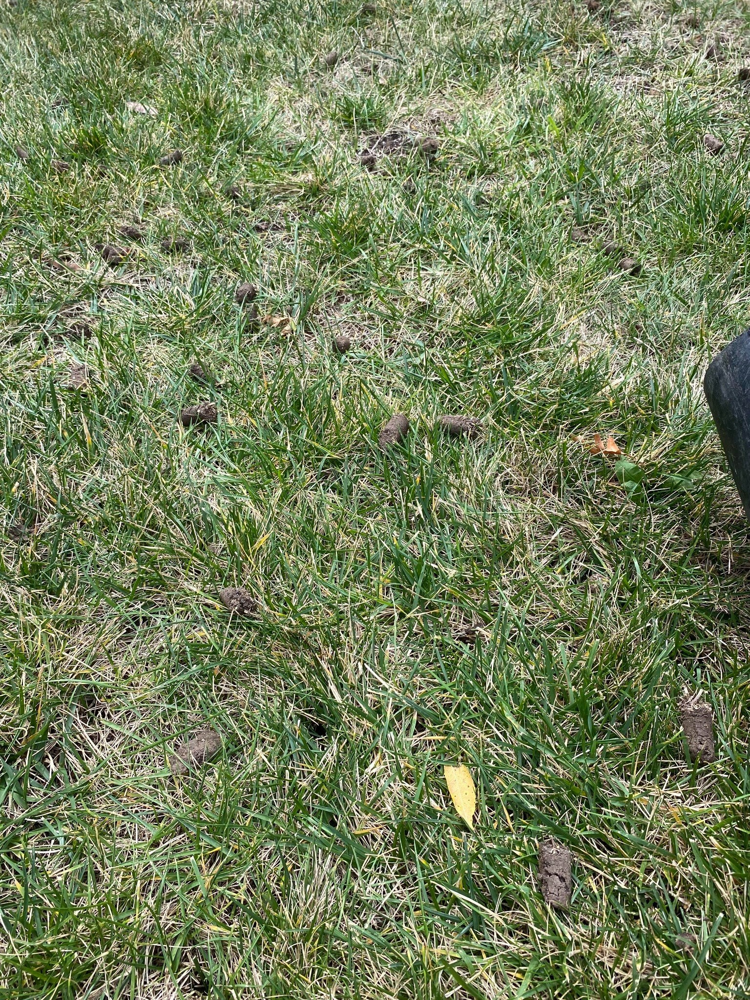

Service
Core aeration relieves compaction so water, air, and nutrients can reach your lawn’s roots. Great for high-traffic yards and thick clay soil.

Compacted soil blocks water and air. Aeration opens the soil so roots can breathe and grow deeper.
We pull plugs across the lawn. Leave plugs to break down naturally—your next mow will help.
Aeration + overseeding is the fastest way to thicken turf and improve bare spots.
Ask about aeration + overseeding packages for fall.
Fall (September–October) is ideal. Spring aeration can also help, especially for compacted lawns.
Aeration relieves compaction so water, air, and nutrients reach roots more easily. It can improve drainage and turf thickness over time.
Yes—overseeding after aeration is a great combo. Seed-to-soil contact improves and new grass establishes better.